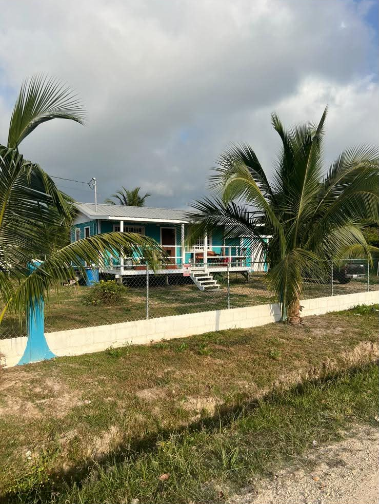
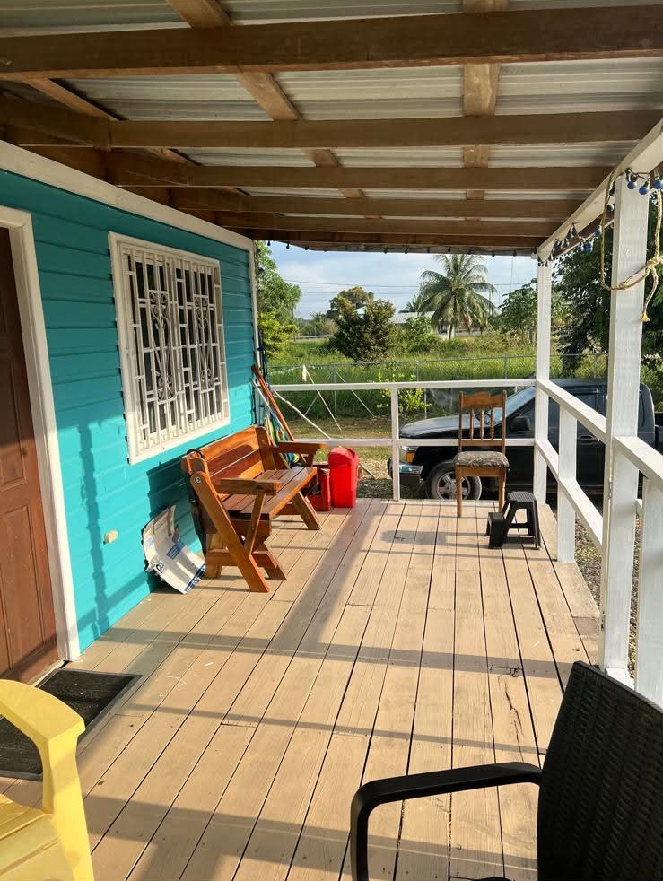
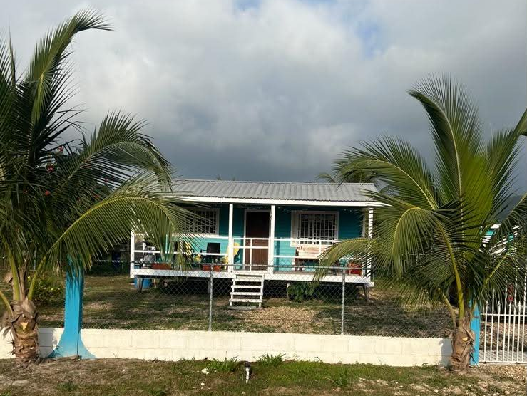
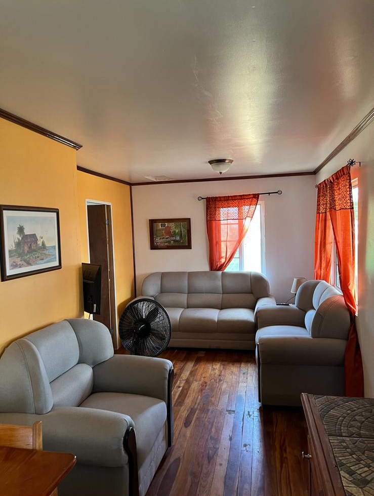
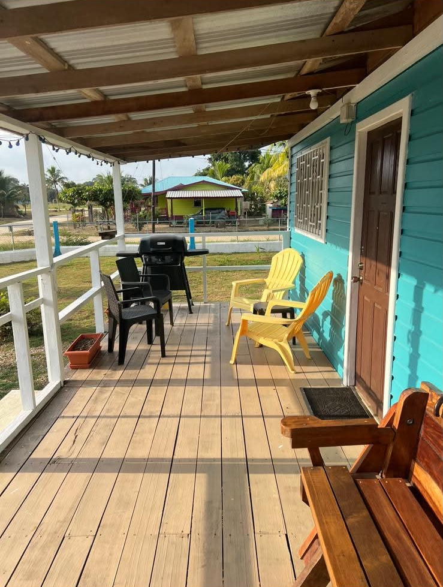
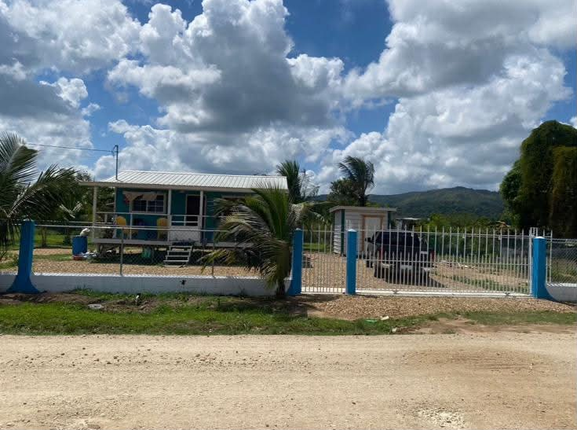
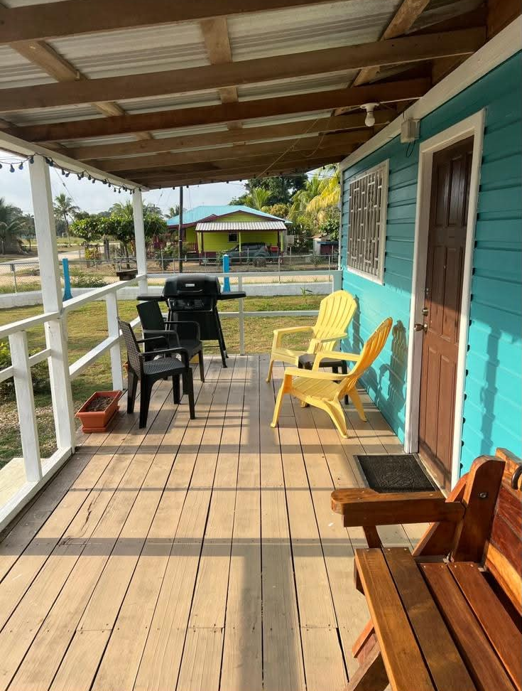
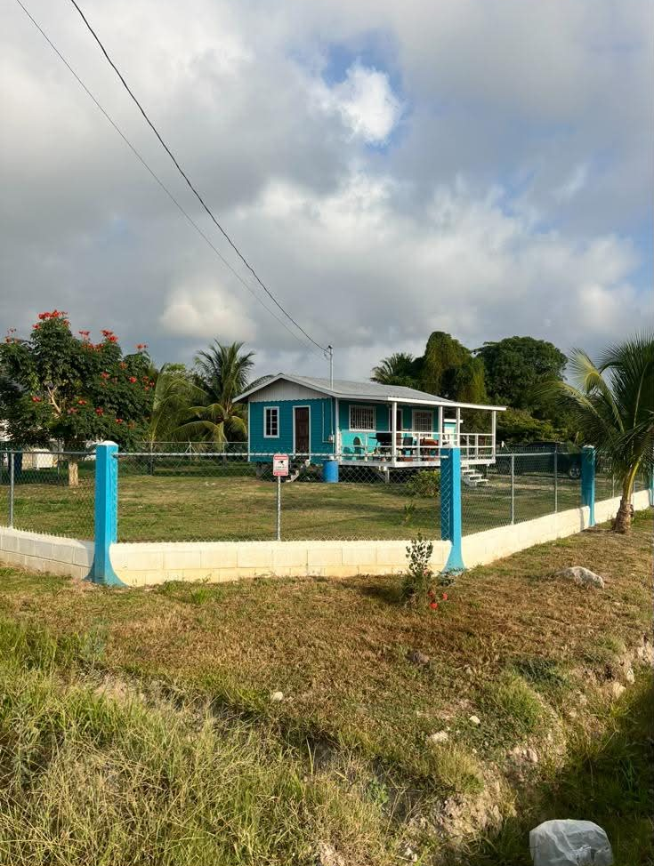

Valley Life
See a quieter side of Belize and experience the rhythm of a community surrounded by farms, hills, roads and river valley.

A PLACE TO CALL YOUR OWN
Lee Blue is a newer wooden house in Pomona, Southern Belize, created for travelers who want more than a room for the night.
With a comfortable interior, a large enclosed garden and your own private space, Lee Blue gives you the freedom to experience Belize at your own rhythm.

THE HOUSE
Step inside and leave the ordinary holiday rental behind. Lee Blue is simple, fresh and thoughtfully furnished — a comfortable private base for discovering Southern Belize.
And outside, the enclosed garden gives you something that becomes increasingly precious when you travel: space of your own.

YOUR OWN GREEN SPACE
The garden is part of the experience. Sit outside. Read. Talk. Listen to the birds. Have your morning coffee and simply be where you are.

THE PLACE · POMONA
Before Lee Blue was here, Pomona already had a story of its own.
The area was once known as Macaroni Hill, a name that appears in historical records from the late 1800s. The name Pomona began appearing in the early 1900s, connected to the citrus orchards that were beginning to shape the Stann Creek Valley.
In 1913, Alfred E. Vine, manager of the British Honduras Syndicate, named his citrus property here Pomona Holdings. The name stayed — and eventually became the name of the village.
Citrus, agriculture, the Stann Creek River Valley and the people who built their lives here became part of Pomona's identity. The valley was also connected to the early Stann Creek Railway, which reached Pomona in the first decade of the 20th century.
Today, Pomona is not a resort town. It is a place where you can experience another side of Belize — closer to everyday life, surrounded by green hills and the landscape of the North Stann Creek Valley.
POMONA TODAY
Staying in Pomona gives you a different perspective on Southern Belize. The Hummingbird Highway connects the valley with the coast and the interior, while the surrounding landscape opens toward the Maya Mountains.
See a quieter side of Belize and experience the rhythm of a community surrounded by farms, hills, roads and river valley.
Pomona is part of the historic citrus-growing landscape of the Stann Creek Valley — a story that helped shape the region for more than a century.
From Pomona, the road opens toward Hopkins and Dangriga, the Maya Mountains, rainforest adventures and the many cultural experiences of Southern Belize.
Have a coffee. Walk around. Watch the light change over the hills. Talk to people. Let the place become more than a dot on your travel map.
“The best places are not always the ones you came looking for.”
— LEE BLUE · POMONALIFE IN POMONA
You don't have to leave Pomona to have a good day. One of the pleasures of staying at Lee Blue is having a little piece of local life right outside your door.
Pizza, drinks and a relaxed local hangout in Pomona. A good place to grab something to eat and meet people from the community.
Pomona has more than one place to eat. From small local restaurants and fast-food spots to Belizean favourites, you can keep discovering something different.
Ask locally where to find fresh handmade tortillas and other everyday Belizean food. Some of the best travel memories begin with something simple and local.
When the day is done, you don't always need a resort. Sit down somewhere local, have a drink and watch Pomona carry on around you.
The Stann Creek Valley is shaped by water. Rivers, swimming spots and rainforest waterways are part of the landscape that surrounds Pomona.
Walk. Explore. Stop for food. Talk to someone. Sit in the garden at Lee Blue. Sometimes the best part of a Belize trip is simply having nowhere else you need to be.
FROM LEE BLUE
Lee Blue gives you a peaceful base from which to discover one of the most culturally and naturally diverse parts of Belize.
A coastal Garifuna community known for its music, drumming, food, culture and relaxed Caribbean atmosphere.
One of the cultural heartlands of Garifuna life in Belize, with deep roots in music, food, traditions and community.
Rainforest, rivers, mountains and some of Southern Belize's most spectacular natural landscapes.
Explore the Cockscomb Basin Wildlife Sanctuary, famous for its jaguar habitat and extraordinary rainforest.
Discover living Maya culture, local traditions and the stories of communities connected to the Maya Mountains.
Taste cacao and discover traditional Maya chocolate-making in the communities surrounding the Maya Mountains.
A LITTLE EXTRA FROM US
Every Lee Blue guest receives a special BLINKITA Guest Bonus that can be used toward selected experiences during your stay.
Experience cacao as more than a drink — through ceremony, presence and connection.
Experience a traditional Maya-inspired approach to bodywork and abdominal wellbeing.
Discover your personal connection to the traditional Maya calendar through a personal reading.
Experience Aqua Lemu Reiki first-hand during your stay in Belize.
LEE BLUE




YOUR STAY
Ready to make Southern Belize your next adventure?
ASK ABOUT AVAILABILITY